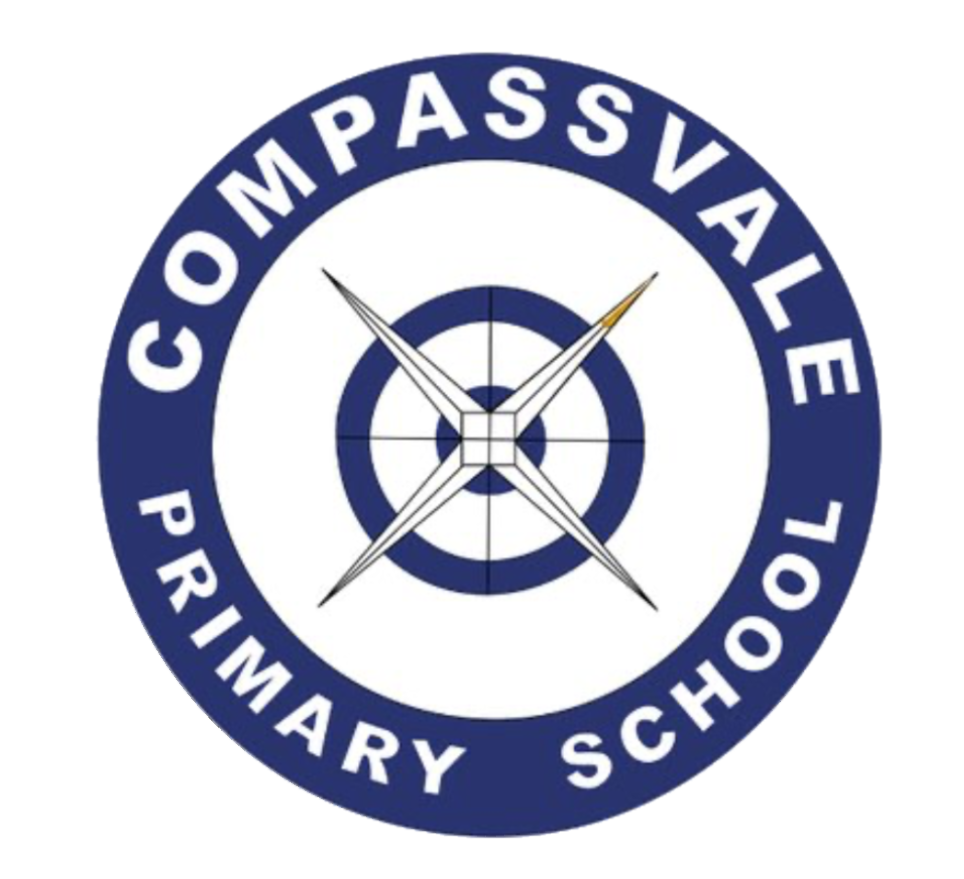
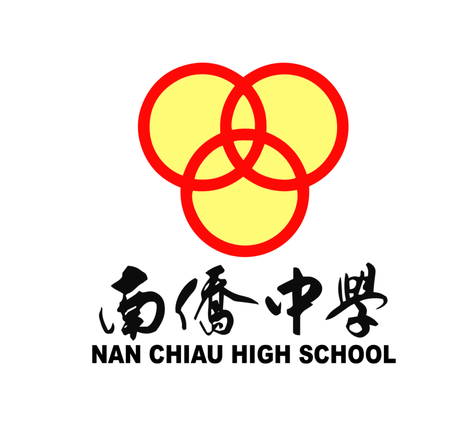
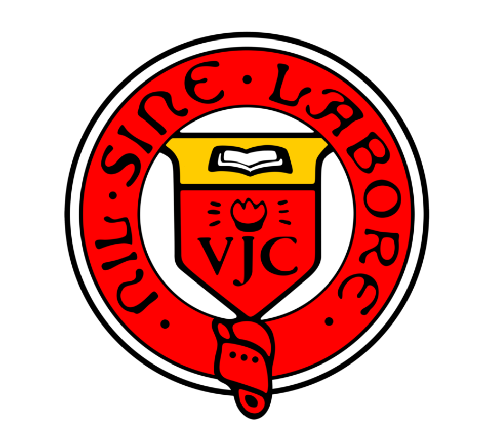
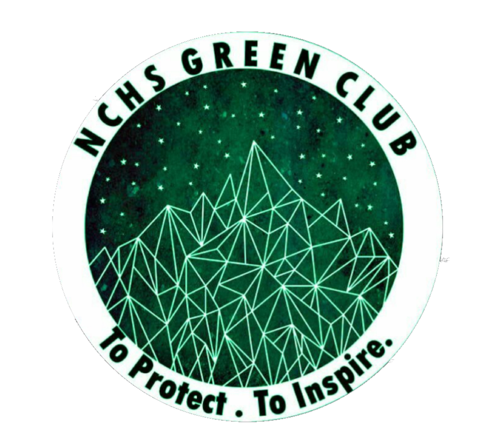

About Me
Full Name: Chin Zhi Qing
Birthday: 14 April 2007
Education Institutions |
||
|---|---|---|
| Compassvale Primary School (CVPS)  |
Nan Chiau High School (NCHS)  |
Victoria Junior College (VJC)  |
CCAs |
||
|---|---|---|
| Green Club (NCHS)  |
StudioV (VJC) |
Writers' Circle (VJC) |
| Head of Publicity (2021-2022) & Vice-Chairperson (2022-2023) |
Member (2024-2025) | Vice-Chairperson (2024-2025) |
| - Managed the IG account @nchs_gc - Planned and hosted weekly CCA sessions, educational booths in school, and events such as Open House and CCA ExploRace |
- Learnt how to film using professional cameras and edit with Capcut and Davinci Resolve - Worked together with others in making short videos - Deployed for filming duty for various events such as NSG competitions, school performances, and J1 orientation |
- Admin work such as making proposals, slides, forms, and sheets using Google tools and Canva - Planned and executed weekly sessions as well as events such as March Camp, Open House and the annual spoken-word performance Glossolalia |